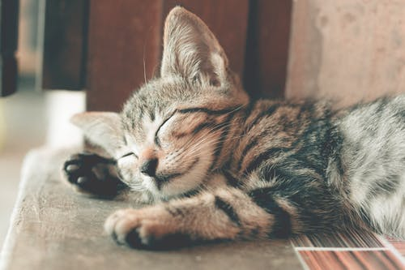
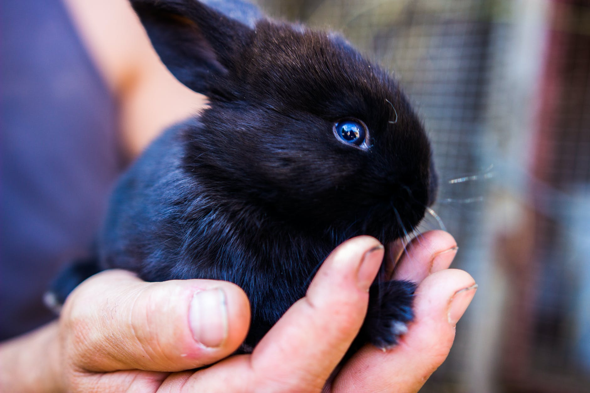
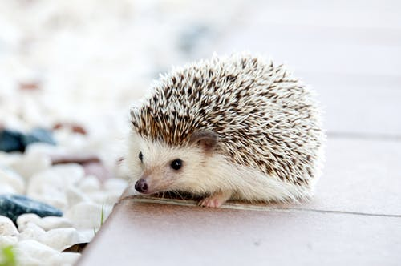

Hi! I am Joyce Lin!
I was born in Hsinchu city, Taiwan. I am 15 year olds. I am now a nine grader in Pacific American School in Taiwan.
There are 5 people in my family. I have one sister that is two year older than me and one brother that is three years
younger than me.
I like to read fiction novels like "Harry Potter" and "Poercy Jackson." I also listen to Chinese, English, and Japanese
music. In terms of gaming, I only play rhythm game such as Cytus and Deemo. I am a cat person. No matter what you say, cats
are always cuter than dogs. It will never change.



